Camera familiare deluxe
17 m² · matrimoniale + singolo · terrazza a est
Ispirazione mediterranea, tessuti indiani e africani, il blu dominante. Bagno di 6 m² con doccia idromassaggio.
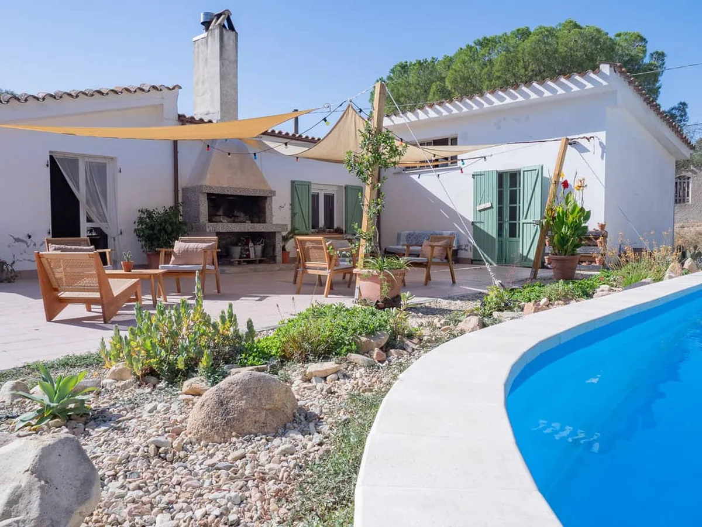
B&B · Casa vacanze · Ritiri
Una casa di campagna con piscina, a 30 minuti da Cagliari
Come soggiornare
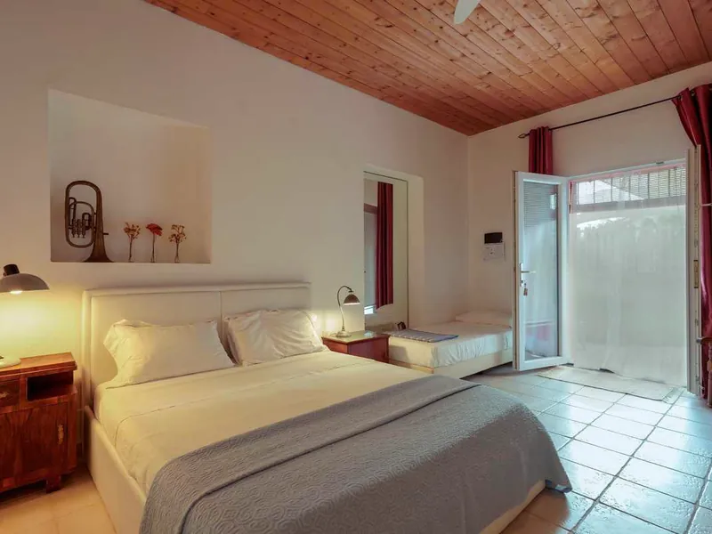
Quattro camere con bagno privato e ingresso dalla terrazza. Colazione in giardino, piscina per tutti.
Vedi le camere →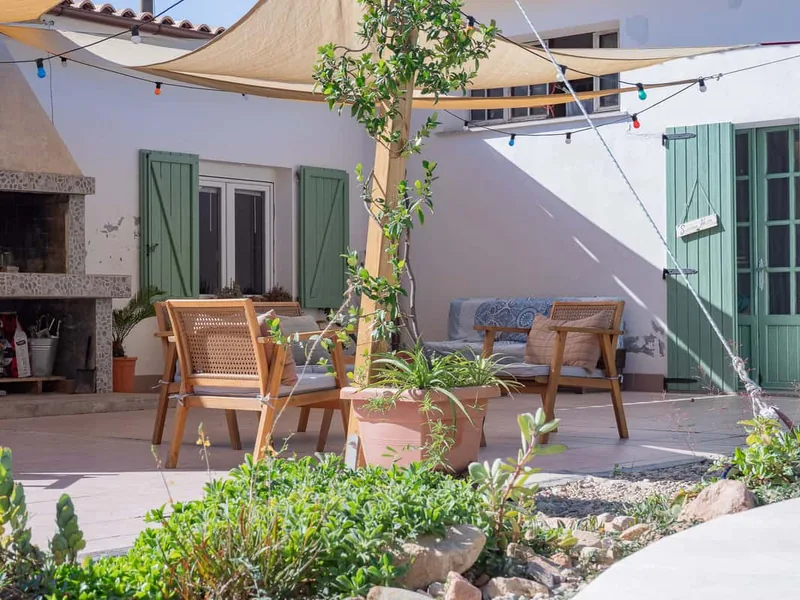
Villa di 400 m² fino a 14 persone: cinque camere, grande cucina, salone di 90 m², piscina e giardino solo per voi.
Vedi la casa →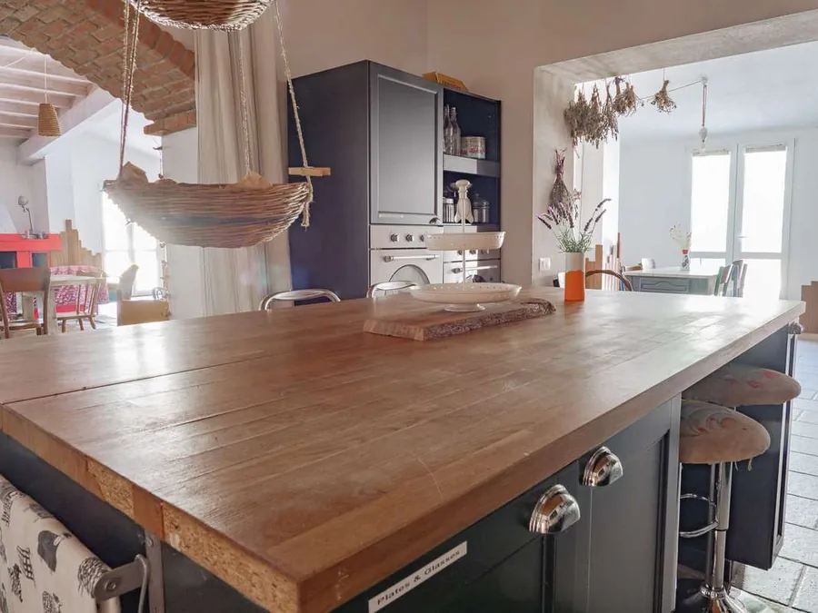
Domu Prexada, dal 2019
«Domu Prexada» in sardo vuol dire la casa felice.
È la casa di campagna che Geraldine ha aperto agli ospiti nel 2019, nel cuore dei Monti dei Sette Fratelli. Chi vuole stare insieme si ritrova in cucina, attorno all'isola centrale. Chi cerca silenzio ha la sua camera, il suo bagno e la sua terrazza.
Quasi tutti i mobili vengono dai mercatini o sono fatti a mano, secondo le tre R: riciclare, riutilizzare, ridurre. Non c'è la TV: c'è il giardino, il canto degli uccelli e un grande barbecue.
Geraldine
Bed & Breakfast
Tutte con bagno privato e doccia, aria condizionata calda e fredda e ingresso indipendente dalla terrazza.
17 m² · matrimoniale + singolo · terrazza a est
Ispirazione mediterranea, tessuti indiani e africani, il blu dominante. Bagno di 6 m² con doccia idromassaggio.
14 m² · matrimoniale · terrazza a sud
La più artistica: marrone caldo, lampade di fantasia, oggetti di recupero e un quadro di Federico Crisà.
14 m² · matrimoniale · terrazza a sud
La più raffinata: colori teneri tra il viola e il verde, pezzi scelti all'antiquariato o in viaggio.
20 m² · fino a 4 persone · terrazza a ovest
La più spaziosa: matrimoniale, un singolo e una culla o due singoli. D'inverno c'è il camino.
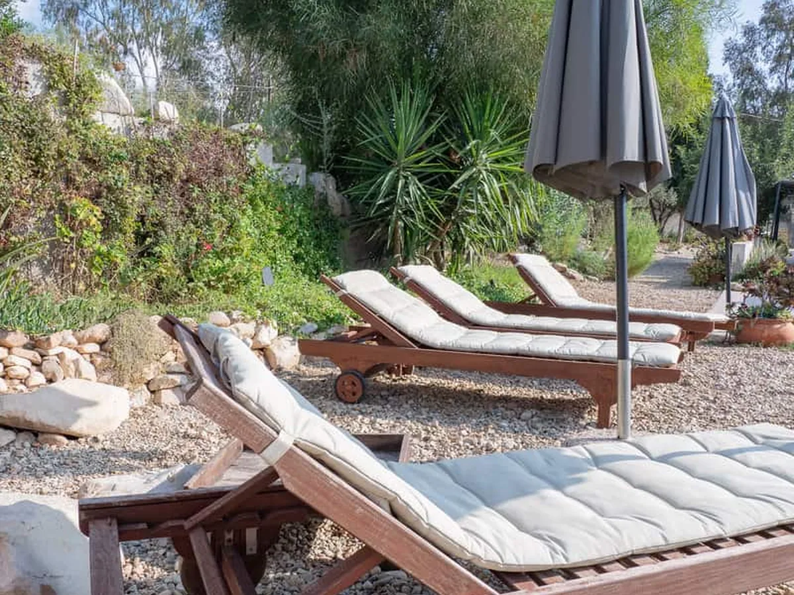
il giardino
3.000 m² di natura · piscina 11 × 5 m · amaca, lettini, barbecue
Casa vacanze
400 m² per la famiglia e gli amici, fino a 14 persone.
Una grande cucina attrezzata per cucinare insieme, con l'isola centrale. Un salone di 90 m². Attorno alla casa, le camere con bagno privato: essere insieme e indipendenti, il vero lusso dello spazio.
Fuori: piscina di 11 × 5 m, due terrazze ombreggiate con tavolo e divani, amaca e un grande barbecue. In giardino vivono tre gatti: autonomi per il cibo, non per le coccole.
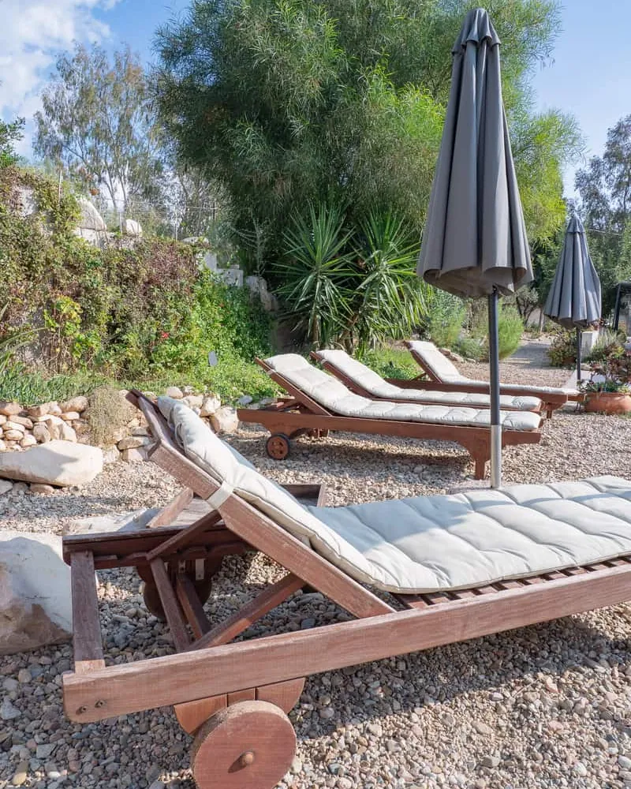
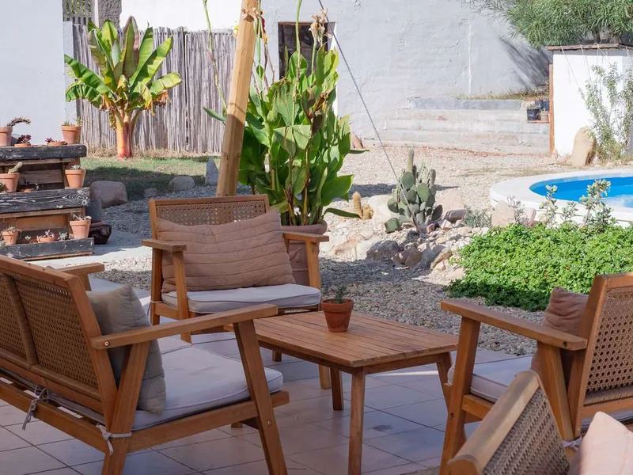
Esperienze ed eventi
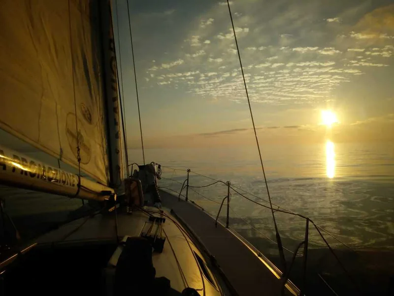
Uscite con Andrea di Soleja Sail, da Marina di Capitana.
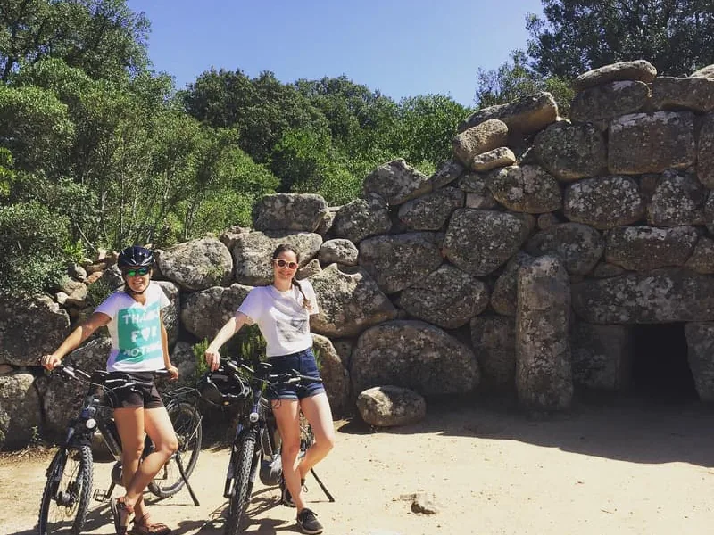
Bici elettriche a noleggio, con o senza guida, nel Parco dei Sette Fratelli.
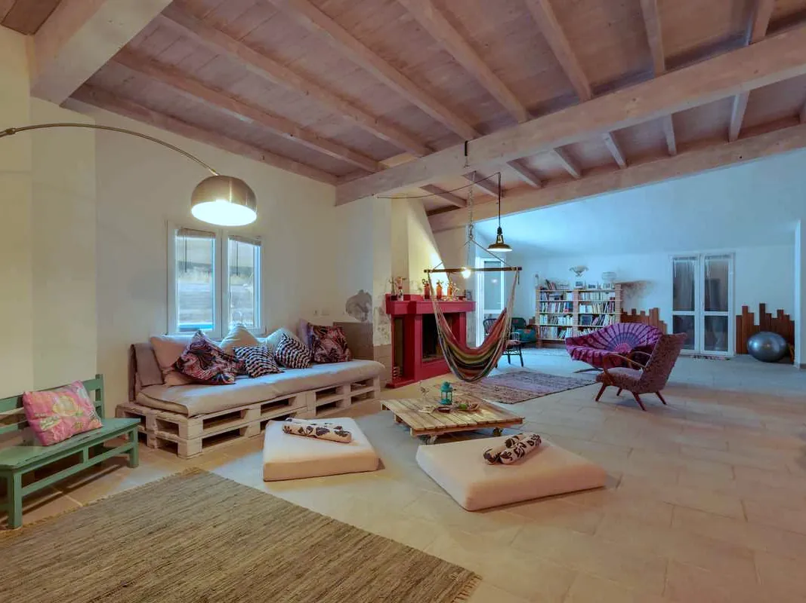
Il salone, la cucina e l'arena davanti alla piscina per yoga, workshop, concerti e team building.
Recensioni Google
«Un luogo speciale, un'ospitalità che resta nel cuore.»
Marco Brian Vestrucci
«Sono stata a Domu Prexada per un ritiro di 4 giorni e ho amato la tranquillità e il silenzio, sentirmi avvolta dalla natura.»
Valentina Pia
«Un posto veramente mantenuto molto bene, dove Geraldine ti riceve con molta gentilezza.»
Andreina Acri
Dove siamo
Via della Beccaccia 9, 09040 Maracalagonis (CA)
Nel verde dei Monti dei Sette Fratelli, a mezz'ora da Cagliari e dall'aeroporto, vicino alle spiagge di Costa Rei e Villasimius.
Indicazioni stradali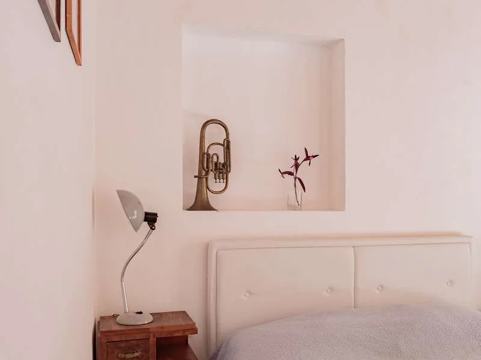
Scegliete le date: la disponibilità si vede subito nel calendario.